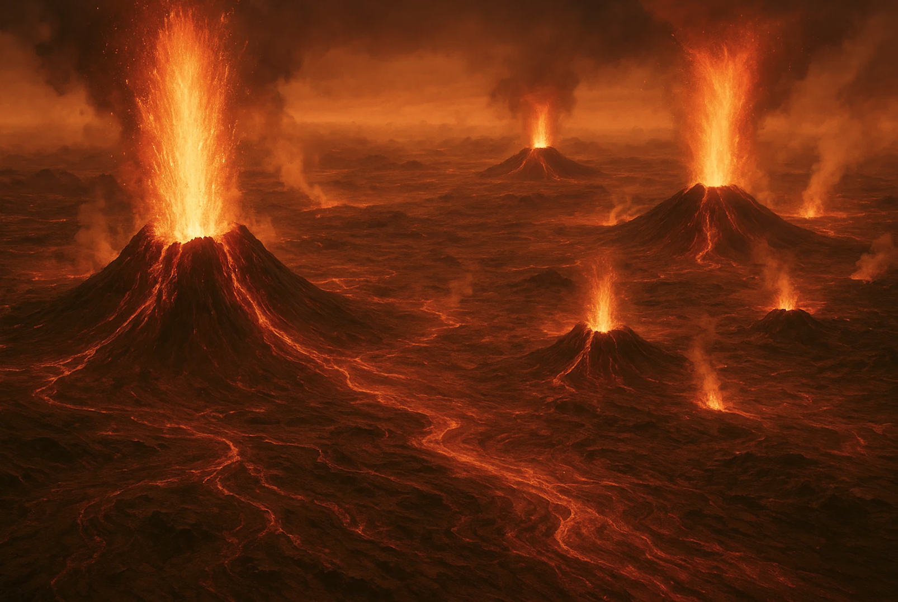

4.6 billion years ago, as the solar system began to form, there were two planets side by side that had similar beginnings yet ended up as polar opposites. Those two planets are Earth and Venus. But why are they so different today, even though they were composed of similar materials in the same part of the solar system? Earth and Venus should be identical twins, but... what happened?
Aside from what I’ve already mentioned, let’s reflect on all the different things Earth and Venus have in common, other than what I’ve already said. They are nearly the same size and have similar densities. Evidence suggests Venus once had liquid water and even oceans, and early climate models propose that Venus could have been temperate for up to 2 billion years, which would have been ideal for not just water, but for life as well.
Today, the average temperature on Venus is 460 degrees Celsius, and the surface is riddled with volcanoes that were once violently active. These volcanoes were Venus’s death sentence. The eruptions lasted tens of thousands, and maybe even hundreds of thousands, of years. They covered the planet with volcanic basalt rock, which now makes up 80% of the surface. That’s not the issue, though; these long-lasting periods of volcanism spewed vast amounts of carbon dioxide into the atmosphere, radically altering the climate.
The carbon dioxide-filled atmosphere trapped the heat and didn’t allow it to escape. This effect caused the planet's temperature to increase rapidly to unprecedented levels. Over time, with the heat being contained, the habitable world changed into a real-life hell. The water boiled away, and the vapor only added to the greenhouse effect.
Earth has had these types of events in its past, wiping out thousands of species, but it has always managed to recover. On Earth, plate tectonics helps regulate the climate by recycling the carbon dioxide volcanoes emit, and the subduction zones pull it back into the mantle. Venus, on the other hand, doesn’t have tectonic plates, which prevents it from clearing the carbon dioxide from its atmosphere. Carbon dioxide keeps accumulating without ever being removed.
We’re lucky to have Venus as a sister planet because it shows us what uncontrolled CO2 levels in the atmosphere can do to a planet. Venus is a barren wasteland, yet despite knowing how it ended up that way, we're still heading straight down the same path. With unchecked CO2 levels continuing to rise on Earth, if we don’t act soon, it will be too late. Let’s not make the same mistake—let’s do the right thing.